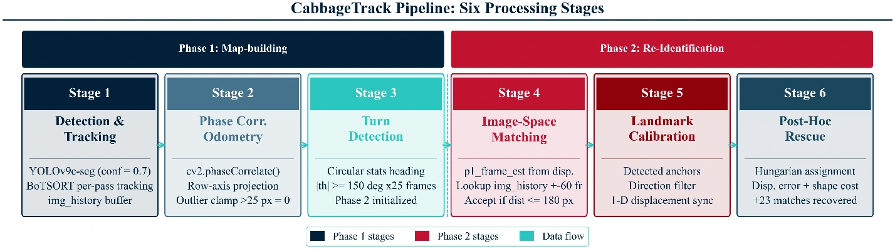
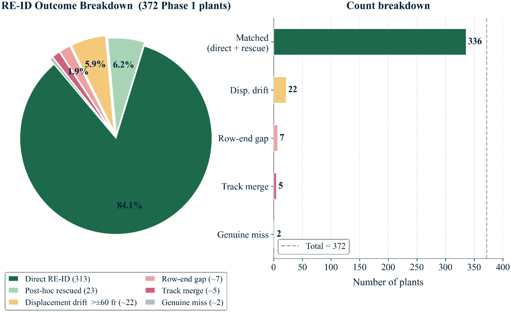
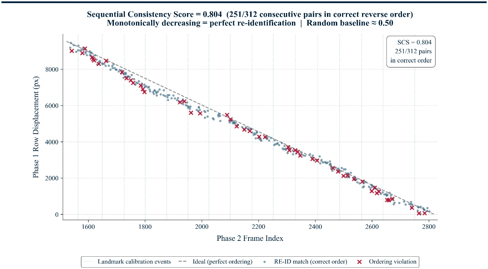
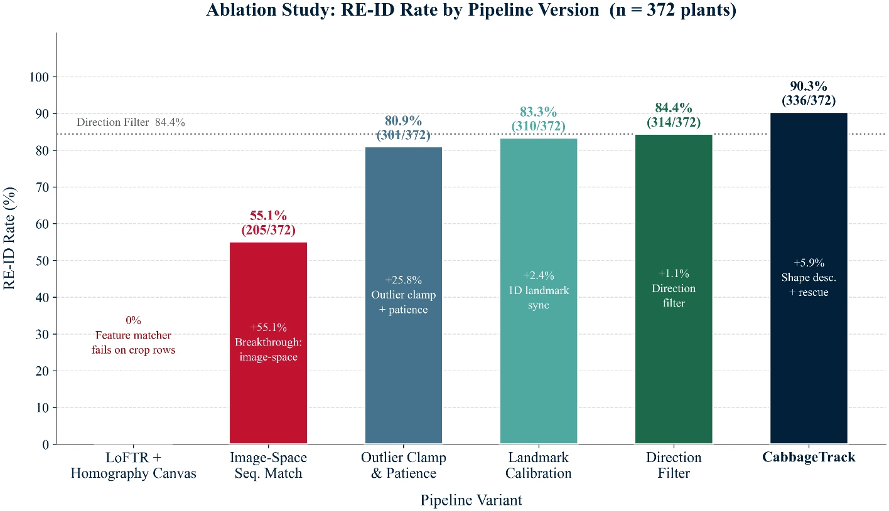

When a drone surveys a crop row twice (once out, once back), it has to recognise every plant again from the reverse angle, with no GPS. CabbageTrack solves that using only positional context from the flight itself, no keypoints, no RTK hardware.
Individual cabbage plants look nearly identical, and a monoculture row's repeating texture defeats most feature matchers, trackers, and visual SLAM outright, so re-identifying the same 372 plants across a reversed drone pass has to be solved positionally, not by appearance. CabbageTrack estimates the drone's motion frame-to-frame using phase correlation (no keypoints), detects the turnaround automatically, and then matches each return-pass plant to its outbound record by predicting where it should sit in the image at the corresponding moment, avoiding the drift that kills global-map approaches on repetitive crop rows.
Data was collected with a DJI Mavic 3E over a commercial field in Pikar Gaon, Sylhet, at ~6m altitude.




This manuscript has been submitted to Computers and Electronics in Agriculture and is currently under peer review. Until it clears review, treat the numbers above as reported rather than independently verified; they're from the single evaluated field row and may be refined as reviewer feedback comes in and multi-site validation continues.